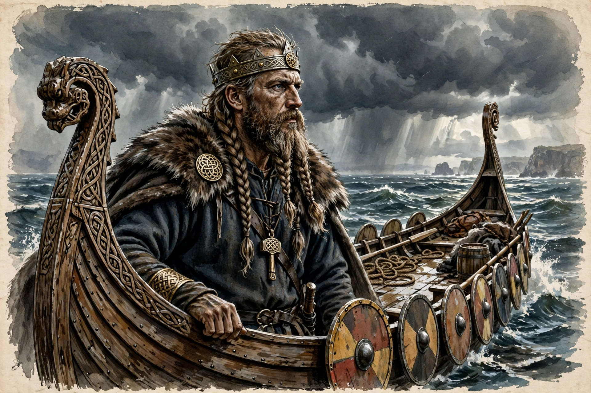

Sweyn Forkbeard
| Sweyn Forkbeard | |
 | |
| King of Denmark | c. 986 – 3 February 1014 |
|---|---|
| King of England | 25 December 1013 – 3 February 1014 |
| King of Norway | 999/1000 – 1014 (de facto, through earls) |
| Born | 17 April 963 |
| Died | 3 February 1014, Gainsborough, England |
| Issue | Harthacnut (namesake ancestor), Cnut the Great, Harald II of Denmark |
Sweyn Forkbeard (Old Norse: Sveinn Haraldsson tjúguskegg; Danish: Svend Tveskæg; 17 April 963 – 3 February 1014) was King of Denmark from c. 986 until his death, King of Norway from 999/1000, and the first Danish King of England, reigning for the last five weeks of his life in 1013–1014.
Early life and reign in Denmark
Sweyn was the son of Harald Bluetooth, the king who Christianised Denmark. According to later sagas he rebelled against his father in the 980s; Harald died of wounds around 986/987 and Sweyn succeeded him. Through alliance with the Swedish king and victory at the Battle of Svolder (999/1000), Sweyn gained control of Norway, ruling it through the earls of Lade.
Conquest of England
Sweyn led repeated expeditions against England under Æthelred the Unready, extracting large Danegeld payments. After the St Brice's Day massacre of Danes in 1002 — in which his sister Gunhilde is said to have been killed — his invasions intensified. In 1013 he mounted a full-scale conquest: the north and the Danelaw submitted, London surrendered, and Æthelred fled to Normandy. Sweyn was proclaimed king, but died at Gainsborough on 3 February 1014 after reigning uncrowned for about five weeks.
Legacy
Sweyn's body was later returned to Denmark and buried at Roskilde. His son Harald succeeded in Denmark, while his younger son Cnut eventually conquered England in 1016 and built a North Sea empire. The Encomium Emmae Reginae is a major source for his campaigns.
See also
Æthelred the Unready · Harthacnut · Encomium Emmae Reginae · Viking activity in the British Isles
Recreated from memory as a standalone page.